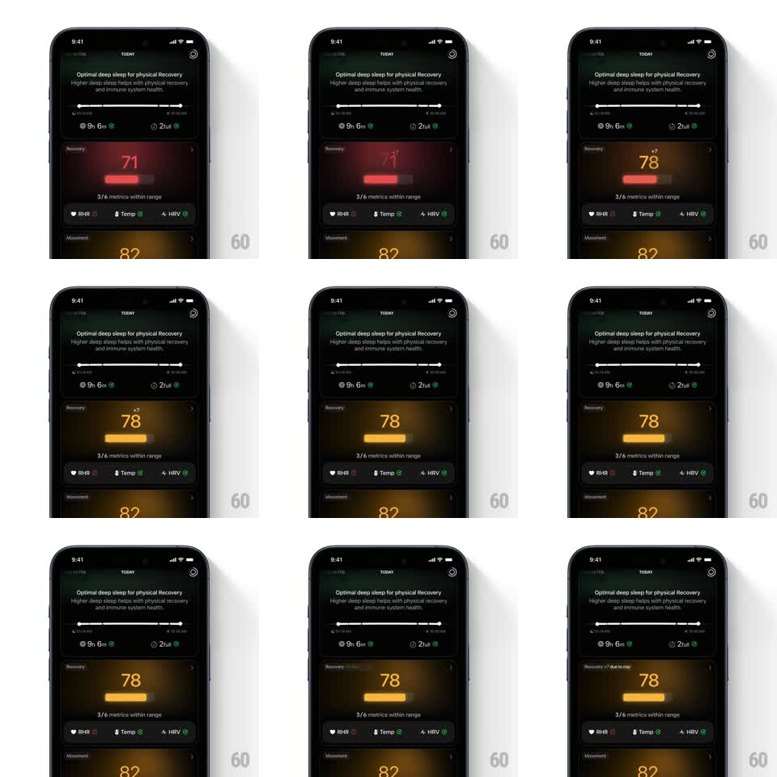

Media
Frame-by-frame

Rebuild this animation 1:1: Ultrahuman's recovery update - the Recovery card's score counts up from 71 to 78 while its bar, tint, and status color shift red to amber and a "+7 due to nap" note slides in.

Rebuild this animation 1:1: Ultrahuman's recovery update - the Recovery card's score counts up from 71 to 78 while its bar, tint, and status color shift red to amber and a "+7 due to nap" note slides in.
## Integration
Integration: stack-agnostic spec - springs given as stiffness/damping, timed motions as duration + curve; map every value to your framework and animation library of choice.
## Scene
Dark Today dashboard: insight card on top ("Optimal deep sleep..."), the Recovery card (score, bar, "3/6 metrics within range", RHR/Temp/HRV chips), Movement card below. Only the Recovery card animates.
## Motion spec
Pattern: score count-up with palette shift, ~1.2s.
- The score counts 71 -> 78 (900ms, ease-out) while the progress bar under it extends in lockstep.
- The bar and number color sweep red -> amber over the count, and the card's background radial tint follows (1s crossfade).
- "+7" slides in beside the score (8px rise + fade, 200ms) as the count completes, then the annotation "due to nap" appears in the card title (150ms fade).
- The metric chips update their status icons in a 100ms stagger (RHR, Temp, HRV) after the number lands.
- Other cards stay static.
## Calibration
- Count, bar, and color share one clock - a number that finishes before its bar is a bug.
- Amber signals improvement, not perfection; never jump straight to green here.
## Reduced motion
Score and bar snap to final values with a 300ms palette crossfade.
## Don't miss
- The "+7" arrives after the count, not during - showing the delta early spoils the reveal.
- The card tint shifts with the score, but neighboring cards keep their own colors.